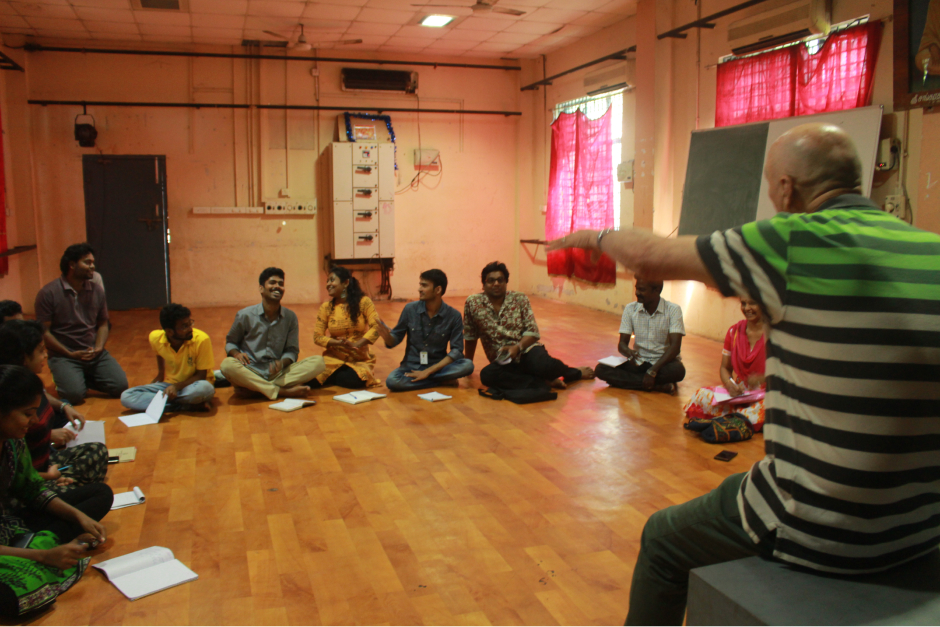

Gunduz Kalic's career as a theatre director, actor trainer and academic manager has spanned two drama schools, three universities, four continents, four decades and many ensembles. He has trained a number of stars and many journeymen and women of stage and screen and directed or artistically supervised the production of well over two hundred plays, including many devised and new plays. As well, seeking to follow in the tradition of Lorca, Littlewood and Dario Fo, companies he led have brought much theatre to non-theatre going audiences.
The upcoming Workshop at Tagore inspired Visva Bharati University, Santiniketan, on "intentional spontaneity" for performing artists of all kinds led by Prof Kalic.
An intense sort of lament inspired by an actual Kurdish singer soldier.